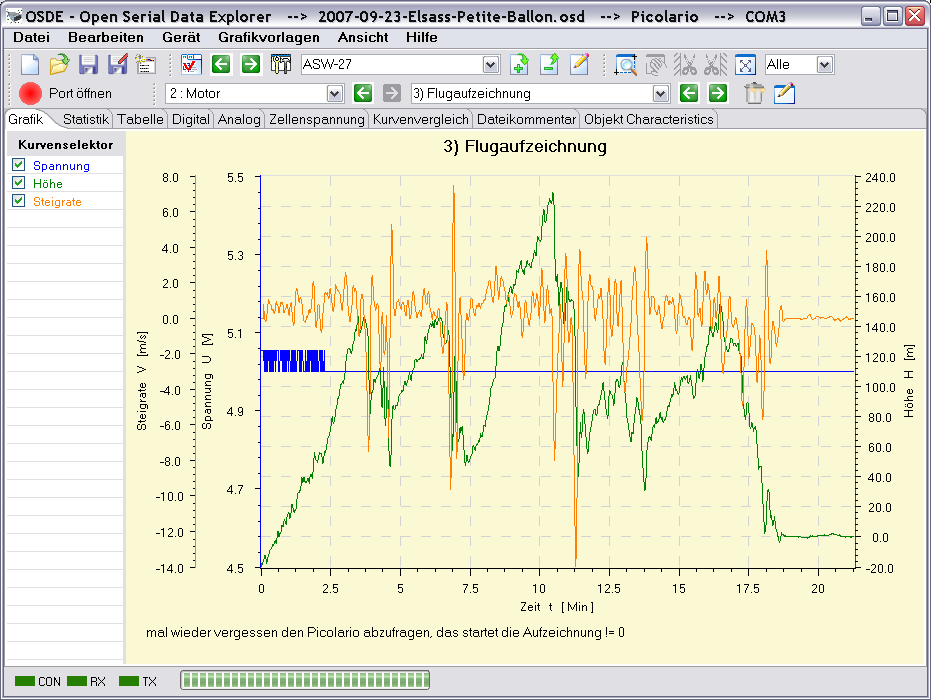

In der Titelleiste der Anwendung werden neben dem Namen der Anwendung das aktuelle Gerät und die momentan verwendete serielle Schnittstelle (Kommunikations-Port) angezeigt. Wie die meisten fensterbasierten Programme steht eine Menübar und eine Toolbar zur Bedienung bereit. Der mittlere Bereich stellt in Tabulatorform die Fenster dar, die die eingelesenen Daten aufbereitet anzeigen. Die graphische Ansicht, die die Daten in Kurvenform darstellt ist die eigentliche Hauptansicht. Die meisten anderen Fenster stellen nur Detailansichten der Daten dar.

Ganz unten befindet sich einen Statusbar. Hier werden der Zustand der seriellen Schnittstelle, offen, geschlossen, sendend und empfangend, angezeigt. Daneben befindet sich eine Fortschrittsanzeige, die bei aufwendigen Datenoperationen den Fortschritt der Operation anzeigt. In dem Bereich links neben der Fortschrittsanzeige werden Statusmeldungen angezeigt. Das können Warnungen oder auch Messwerte sein, die beim Vermessen der Kurven entstehen.